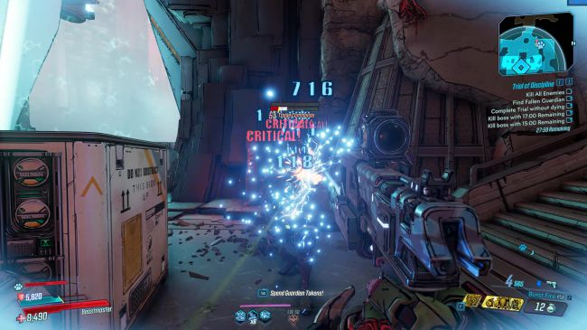
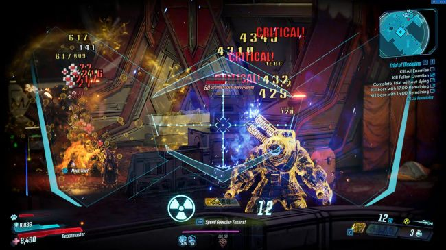
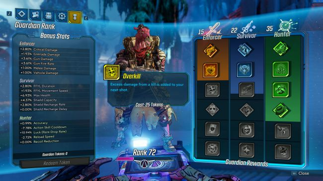

Bad jokes clash with great guns in a looter shooter lost in time.
Borderlands 3 is The Family Circus by way of Spencer's Gifts, a game with long, earnest quests about how darn good coffee is punctuated by gore and gun violence. Borderlands 3 walks by dog poop, points at it, and laughs, and then sets it on fire. Borderlands 3 stays up until 11:30 pm drinking soda and googling crass Flash animations, taking detailed notes.
It's stuck in the late '00s, when surface level vulgarity was enough to qualify as edgy—Borderlands 3 is seriously obsessed with turds—and when the series was first conceived. It's stuck in a time when memes lasted months rather than days, when referential humor was still a novelty and not exhausting, when you could point at something the slightest bit abnormal or gross and call it a joke. Simpler times, not necessarily better times.
Our distance from the era Borderlands 3 evokes makes it feel like a retro shooter rather than alive and present in modern humor and pop culture. It's simultaneously repulsive and compulsive, an FPS RPG that excels when its weapon generation system spits out guns that feels great to shoot, adorned with broken attributes capable of turning hordes of goons, bugs, and soldiers into clouds of red mist, elemental particles, explosions, and big damage numbers.
Then it tells one of its many long, bad jokes and the cloud dissipates. I have horrific whiplash.
Skagological
Tales from the Borderlands proved that the Borderlands universe could balance goofy slapstick comedy with great character work, gracefully swaying between fourth-wall breaking gags about videogame clichés and heartfelt drama. It irreversibly changed what I expect from the series.
But Borderlands 3 opts for a best-of approach, something like a sitcom clip show. The new space travel setup takes the player on a tour of the galaxy in search of yet more vaults, each stop an excuse to roll out an old character only for them to disappear or fade into the background as soon as they say hello, shoot some folks, and crack a few one-liners in sidequests that do little to reveal anything about them or test them in any way.
Under the guns
The new locations are a welcome change of scenery from the muted deserts of Pandora, though it's still home to the most zones and where I spent the most time throughout the campaign. Eden-6 is your typical swampy jungle, where fire-breathing dinos and club-wielding, shit-tossing jabbers chased me around swamps and through the treetops. Promethea is a slick corporate dystopia composed of uniformly branded architecture and neon lighting.
A few surprise locations mix things up further, though most environments are still a few open areas with branching corridors. Borderlands' signature comic book style hasn't changed much, but it looks significantly sharper in 2019, with characters and sweeping vistas that communicate scale and personality clearer than ever.
All your base are belong to us
Each location has its own enemy types, but in practice there's not much difference between fighting a swarm of COV soldiers spawning in from all directions or a swarm of bandits spawning in from all directions. Borderlands 3 usually tests players with a mess of enemies in open, multi-tiered arenas, more of a war of attrition than a tactical puzzle.
